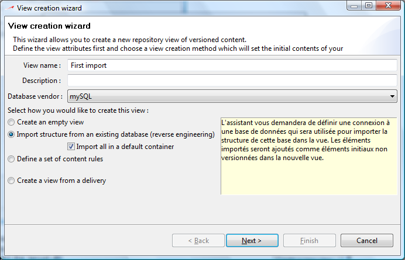
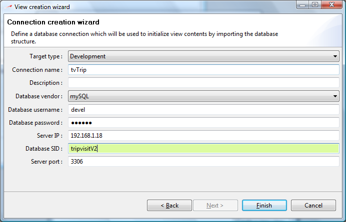
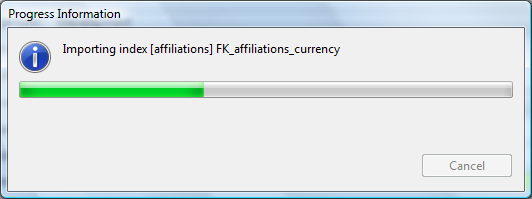
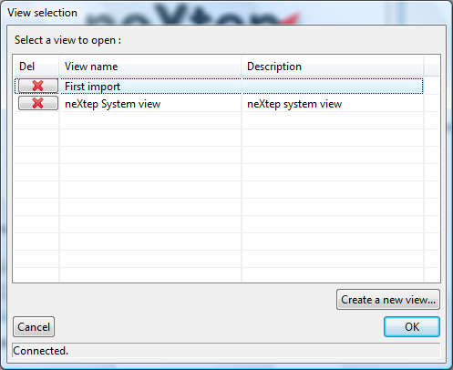
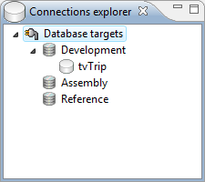

neXtep Designer is a development environment with integrated version-control based on a repository. In order to work with an existing database, you first need to import it into the repository.
The import process is completely automated through an import wizard and it will only take a few seconds.
NeXtep designer works with views : views are literally a “view” on designated elements in a specific version. When you open the neXtep designer workbench, you open a view you have selected. In the workbench you will then only see the selected view contents.
For more information on views, please consult :
When you start neXtep designer, a view selection dialog always prompt after you successfully logged in.
Click on the “Create a new view...” button in the bottom right on the dialog. A view creation wizard dialog will come up with different view creation options :
First select the target database vendor (Oracle or MySQL so far)
Then select the “Import structure from an existing database (reverse engineering)” view creation mode. Leave the “Import all in a default container” option checked for now. We will see that later.

Click next. A connection dialog will appear, asking you to define the connection to the database you want to import. Enter the settings of your targetted database and click next.

You will see the import progress monitor importing the objects from your database. Depending on the number of structural objects in your database this can take a few minutes.

Congratulation your view is created !
After the import, the view selection dialog will come again with your new view listed. Select it and click OK (or double click it).

The neXtep workbench will come up with your view contents. Note that everything has been imported in a default container named just like the view. Consider this container as being the “database” application you've imported. This is the way to modularize components, allowing parts of a database structured to be shared between different applications.
Note that all imported elements now have a version and that they are all checked in. This is to make the imported database structure a reference time point. Now if you like to make changes on any element, perform a checkout on it first. You can do this by right clicking it in the version navigator and select “Check out” or through the toolbar checkout icon.
The default container is still checked out after the import. This is to let you adjust the imported elements, maybe you would like to remove, add or simply review the elements before committing your application database structure.
A common use-case is to display a database structure graphically to analyze it. NeXtep designer comes with a diagram editor which has been designed to quickly display instant models of existing application for that purpose.
Right-click on your default container and select Add > Diagram.
The diagram editor will appear. Now 2 options :
Drag / drop the tables you want to display in the diagram
Right click in the diagram background and select “Add tables...”
Since you created your view from an existing database, this connection had been attached to the view as the default synchronization connection.
Be careful : be sure the connection points to a development database otherwise this step may alter the structure

This means that synchronization of your development view will affect this connection.
But first let's explain synchronization : neXtep designer is an offline development environment. That means you do not work on your development database, you work in a repository. The repository keeps track of every change you make and will therefore be able to deploy your modifications easily. But in a development context, you often need to publish your developments to a database for other teams / colleagues.
This is what synchronization does : it synchronizes your development database with the current repository status. To do this it loads the target database structure, compares each element to repository, and generates SQL code to transform the model.
You can synchronize your environment by the CTRL+B shorcut (like a “Build” shortcut) or by clicking the toolbar icons.
For more information about synchronization please go visit :
Now you have finished the quick start ! Now do what you want : use by yourself or explore more advanced topics of the help books.
Don't forget : we love feedbacks, so please tell us what you think of the product, submit suggestions, etc.